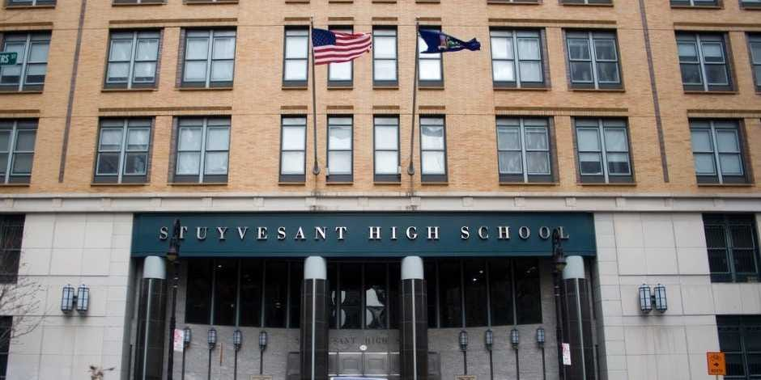

ABSTRACT
The SAT is a standardized test widely used for college admissions in the United States. The goal of this project was to identify any unintended patterns that would put certain groups at an disadvantage. This is an important step in making the US education system more equal for all. According the US Department of Education website, the challenge of ensuring educational equity is formidable.
In hopes to be more informed on this matter, I would like to know:
- What factors influence differences in SAT scores and opportunities to attend certain colleges/universities?
- Factoring in housing prices, where can one get the best high school education in New York City?
- Using NYPD Crime Data, can we find any overlaps of high crime in poor performing schools?

METHODS
This analysis used descriptive statistics and data visualizations to explore the following datasets on New York City high schools. Please check the GitHub repo for data links.
- SAT scores for all NYC high schools in 2011-2012
- School attendance information - Attendance information for each school in New York City
- Class size - Information on class size for each school
- Advanced Placement - Advanced Placement (AP) exam results for each high school (passing an optional AP exam in a particular subject can earn a student college credit in that subject)
- Demographic information - Demographic information for each school
- Graduation outcome - The percentage of students who graduated, and other outcome information
- School surveys - Surveys of parents, teachers, and students at each school
- NYC Housing Data -Department of Finance (DOF) maintains records for all property sales in New York City, including sales of family homes in each borough. This list is a summary of neighborhood sales for Tax Class 1, 2 and 3 Family homes
- NYC Crime Data - Dataset includes all valid felony, misdemeanor, and violation crimes reported to the New York City Police Department (NYPD) from 2006 to the end of last year (2017)
- The extract, transform, and load (ETL) portion was done as part of dataquests instructions and methodology.
Notebooks
- Schools.ipynb - This notebook examined the data source from 1 to 8. The goal was to identify any unintended patterns that would put certain groups at an disadvantage
- NYPD Crime 2001.ipynb - This notebook analyzed the crime rates and cross referenced the heat map with the schools with low safety/respect scores. This serves as a confirmation of unsafe neighborhoods which influences academic performance.
Data Analysis